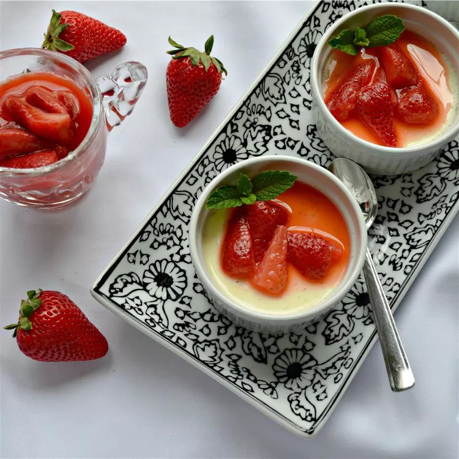

White Chocolate Panna Cotta with Stewed Strawberries

Description
Gluten-free, wheat-free, soy-free, egg-free, and nut-free dessert.
Ingredients
- 6 ounces white chocolate, chopped
- 2 cups heavy whipping cream
- 1 tablespoon white sugar
- 1 teaspoon vanilla bean paste
- 1 tablespoon boiling water
- 1 ½ teaspoons unflavored gelatin powder
- Stewed Strawberries:
- 4 ounces fresh strawberries, quartered
- ¼ cup orange juice
- 2 teaspoons white sugar
Steps
- Combine white chocolate, heavy cream, 1 tablespoon sugar, and vanilla bean paste in a saucepan over low heat; cook and stir until chocolate has melted and mixture is smooth, 5 to 7 minutes.
- Place boiling water in a small bowl. Sprinkle gelatin powder over water and stir until dissolved. Stir gelatin mixture into white chocolate mixture until smooth.
- Ladle white chocolate mixture into six 1/2-cup ramekins. Cover with plastic wrap and chill until set, about 4 hours.
- Combine strawberries, orange juice, and 2 teaspoons white sugar in a saucepan over medium heat. Bring to a boil; reduce heat and simmer, covered, until strawberries have softened and mixture has a syrupy consistency, 2 to 3 minutes. Remove from heat, cover, and refrigerate until chilled, about 30 minutes.
- Spoon some stewed strawberries over each ramekin to serve.